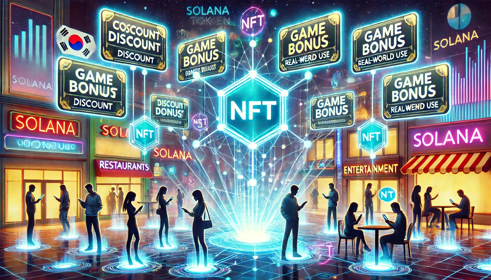
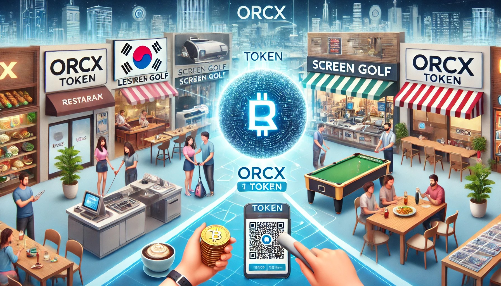

OrcaX는 실물 자산 기반의 Web3 프로젝트로, 토지, 건물, 스크린골프 운영 등 현실 세계의 가치를 토큰에 담았습니다. ORCX 토큰은 이러한 실물 기반 경제를 디지털로 확장하는 연결 고리 역할을 합니다.
쿠폰형 NFT는 다양한 실물 서비스와 연계되어 있으며, 이를 통해 할인 혜택을 제공하고 게임 요소와 통합하여 재미를 더합니다. Polygon 체인 기반의 NFT와 Solana 기반 토큰을 연계한 구조로 Web3 실용성을 강화합니다.

ORCX는 다양한 가맹점을 통해 실생활에 적용됩니다. 식당, 레저, 생활가전 등 다양한 업종에서 사용할 수 있도록 지속적인 제휴를 확장 중이며, 퍼즐 게임과 쇼핑몰 등을 통해 사용자 접점을 확대하고 있습니다.
